SPI Equipments · Service app · 2026
SPI Service: one ticket, from the shop floor to a paid bill
SPI Equipments makes and services machines for textile companies. I designed a mobile app where the customer, the service engineer and accounts all work on the same ticket.
3–5 → 0
calls or messages per ticket
3–5 → 0
days to send a bill after the job
1 in 4 → 0
visits found billable only afterwards
Before is SPI’s estimate. Expected is what the design is built to do. The app is being built, so nothing is measured yet.
- Role
- Product Designer, end to end (the only designer)
- Worked with
- SPI’s owner, their team and developers
- Platforms
- iOS and Android, plus web
- Status
- Being built now
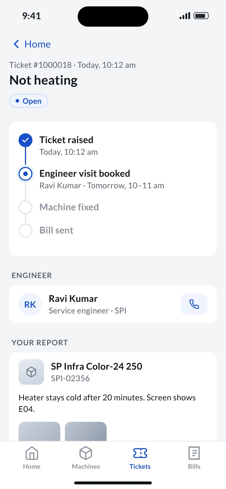
Customer
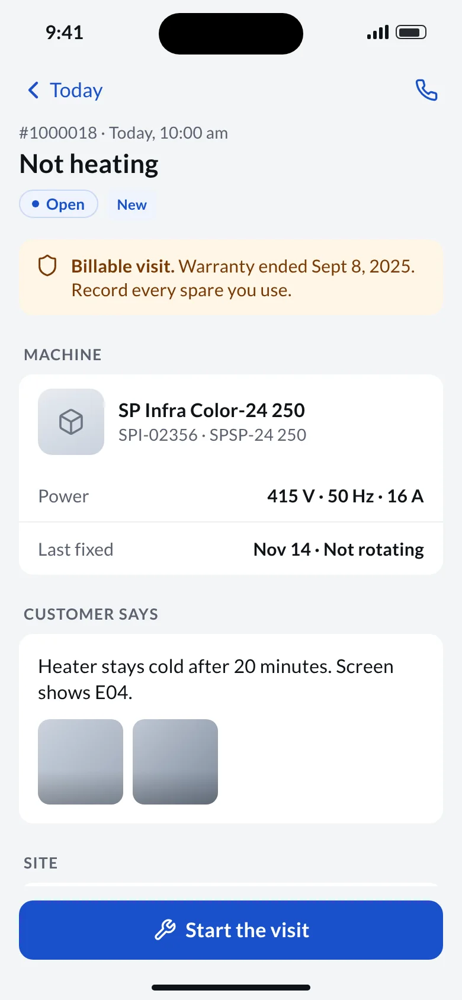
Engineer
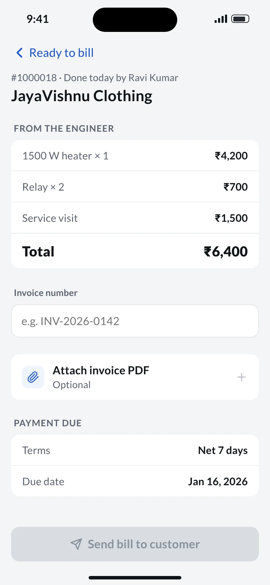
Accounts
The problem
Three teams, no shared record
A complaint moved between the customer, the service team and accounts by phone and message. Each handoff lost something, so the same questions were asked again and again.
20–30
service tickets a month
1 in 4
visits found billable only after the engineer left
~30 days
for customers to pay
SPI’s own estimates. That’s about 5–7 visits a month at risk of going unbilled.
What got lost at each handoff
How I learned this
I spoke with all four groups who touch a ticket, then mapped one job from report to payment.
I was the only designer. I mapped the workflow for each role, defined the ticket and its statuses, designed the web screens, then the mobile app and its design system, and worked with SPI’s developers through the build.
Key decisions
One record, each role sees its part
Every decision cuts typing or a phone call out of the job.
From my first version to now
My first version gave every role the same dashboard. Now each screen puts that role’s next step first.
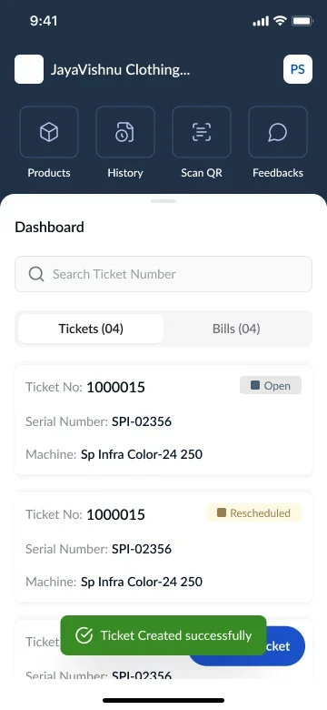
First version
Four equal icons, no clear first step. Bills hidden behind a tab.
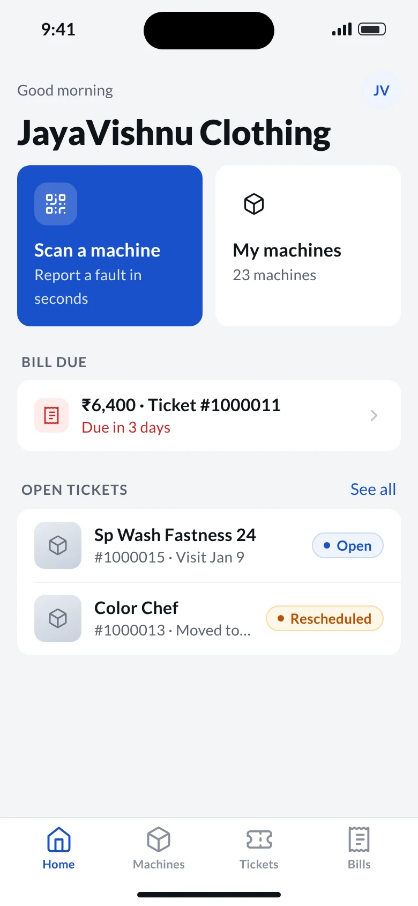
Now
Scan a machine is the main action. The bill due shows first, in red when close.
Decision 1
Start from the machine, not a form
Customers often don’t know a machine’s model or serial number. So they scan the QR code on the machine: make, model, serial and warranty come with it, and the report starts filled in. Nobody asks “which machine?” later.
Trade-off: SPI has to keep a register of every machine sold, with its QR code.
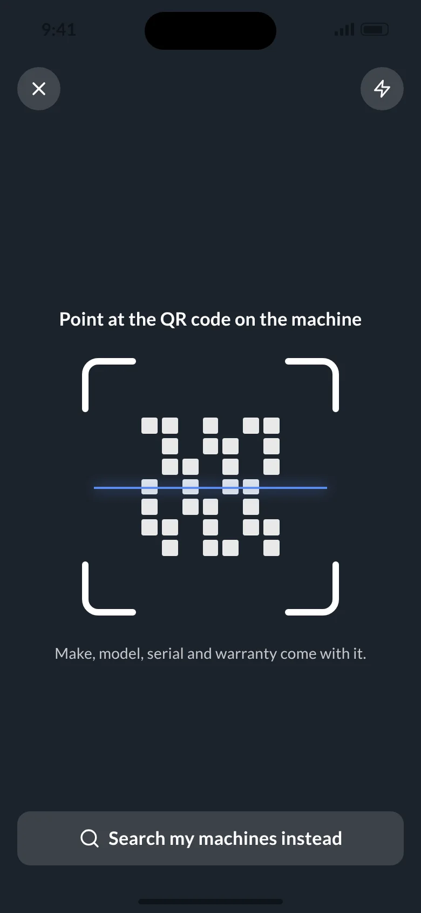
1 · Point at the code on the machine
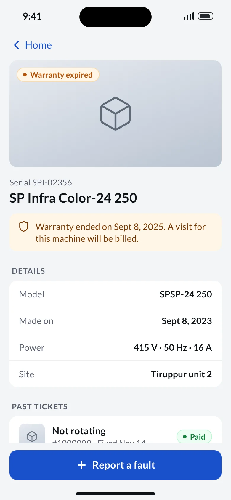
2 · Check the machine and its warranty
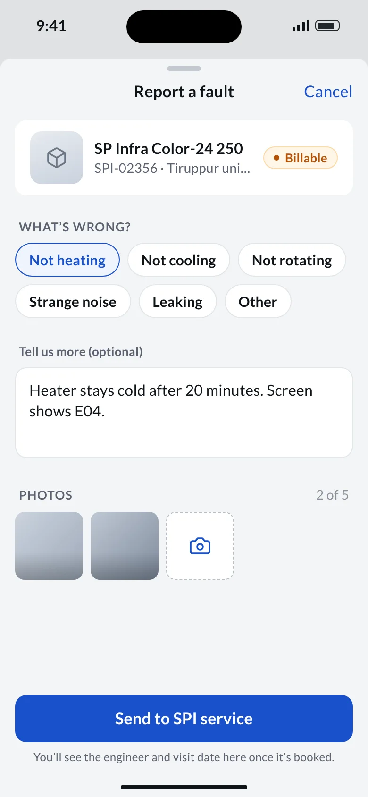
3 · Pick what’s wrong and send
Decision 2
Engineers plan by day, not by ticket list
Engineers think in visits and sites, not ticket numbers. The first question at 9 am is “where do I go first?”, so home is today’s visits in time order, with new and rescheduled ones tagged. A month calendar is a tap away.
Trade-off: travel between sites is still planned outside the app.
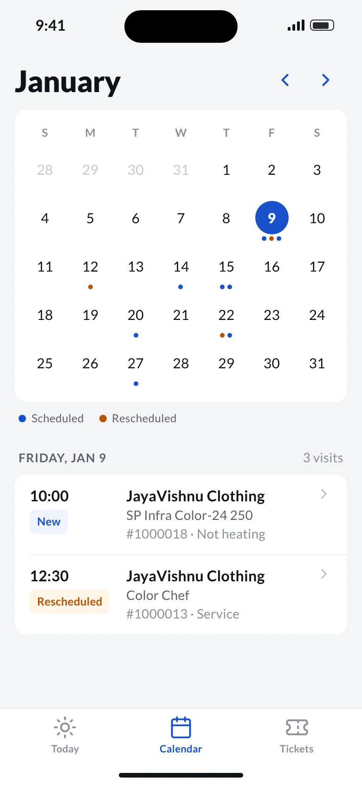
1 · Pick a day
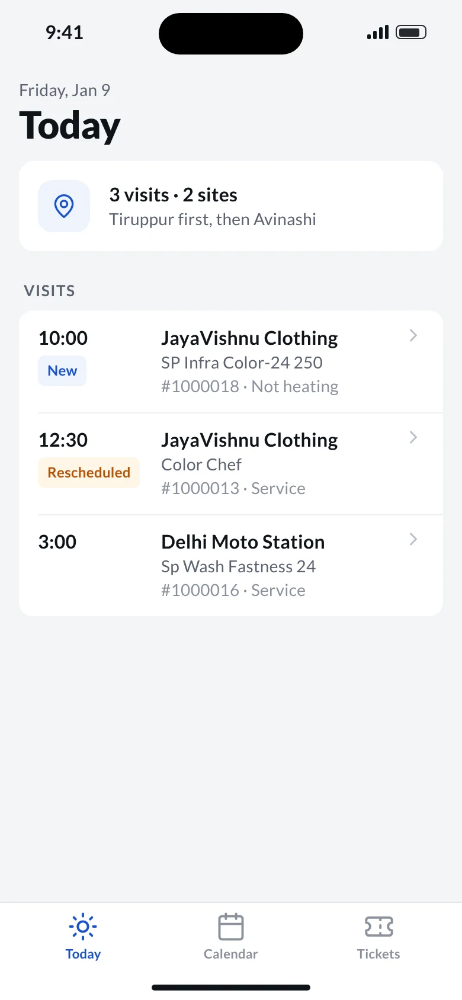
2 · Open the next visit
3 · Start the visit
Decision 3
Pick from lists, don’t type
Engineers fill in reports standing at a machine, often with dirty hands. They tick faults from a list and count spares with + and −. A note is only for faults not on the list, and the counts become the bill.
Trade-off: the lists need upkeep as SPI adds machines and spares.
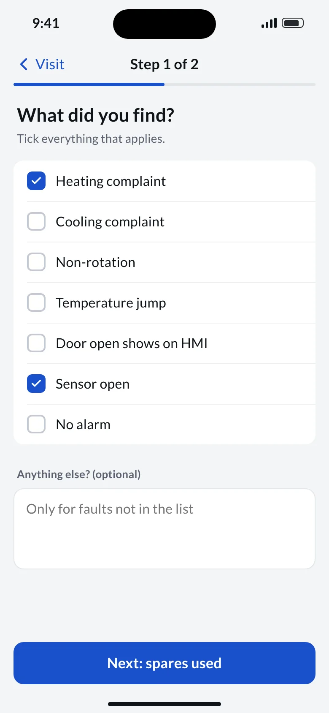
1 · Tick what’s wrong
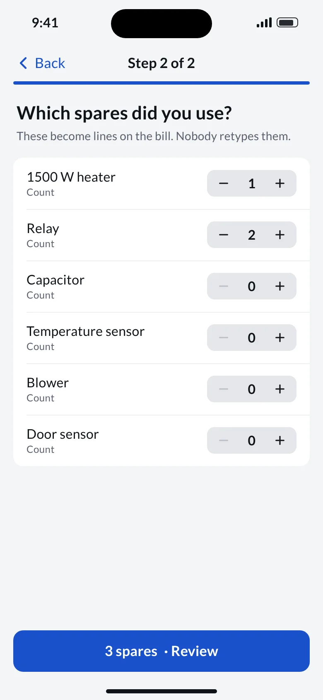
2 · Count the spares
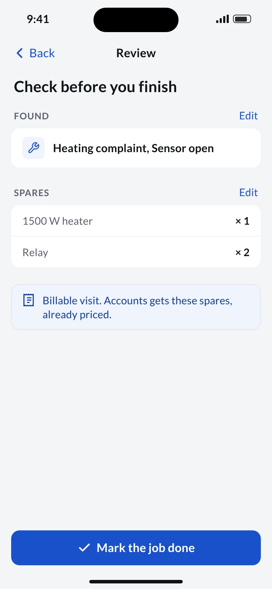
3 · Check and finish
Decision 4
The bill starts from what the engineer recorded
Accounts used to rebuild each bill from calls and messages. Now a finished job arrives priced. Accounts adds the invoice number and sends it, and the customer sees it with the days left to pay. The bill matches the work, and goes out the same day.
Trade-off: spare and service prices must be set up before the first bill.
1 · Accounts adds the invoice number
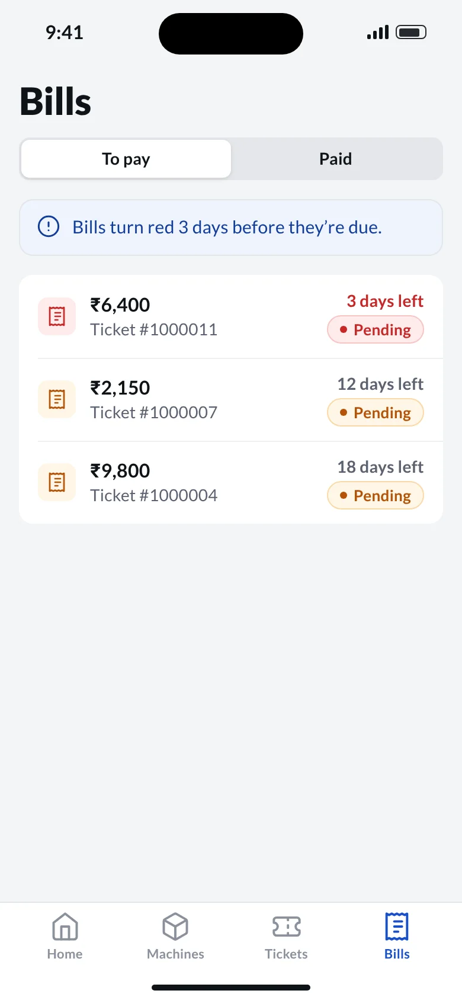
2 · The customer sees the new bill
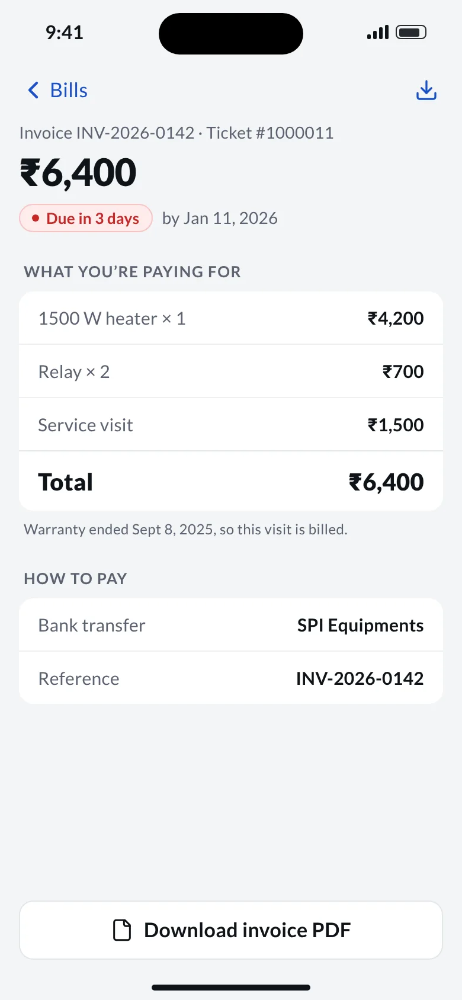
3 · And exactly what it’s for
Decision 5
Native on iOS and Android, from one system
SPI’s customers and engineers use both iPhones and Android phones. One set of colours, type and spacing, while navigation, buttons and checkboxes follow each platform. People already know how their phone works.
Trade-off: two sets of components to build and test.
iOS · tab bar
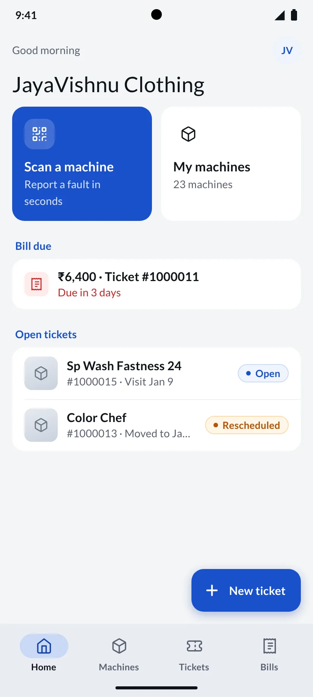
Android · floating “New ticket”
iOS · sheet with Cancel
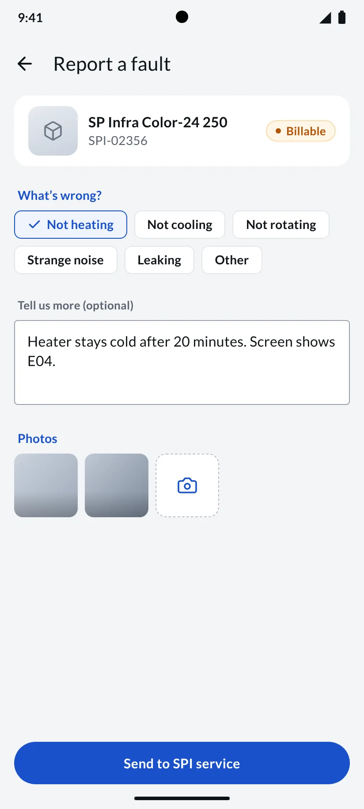
Android · full screen, back arrow
Try it
Follow one ticket, end to end
A working prototype. Pick a step, or tap anything you like. Sample data, built for iOS here.
Design system
A small system both platforms share
Lato for type, SPI’s blue for the main action, and one colour per status. Every number uses tabular figures, so amounts and ticket numbers line up in lists.
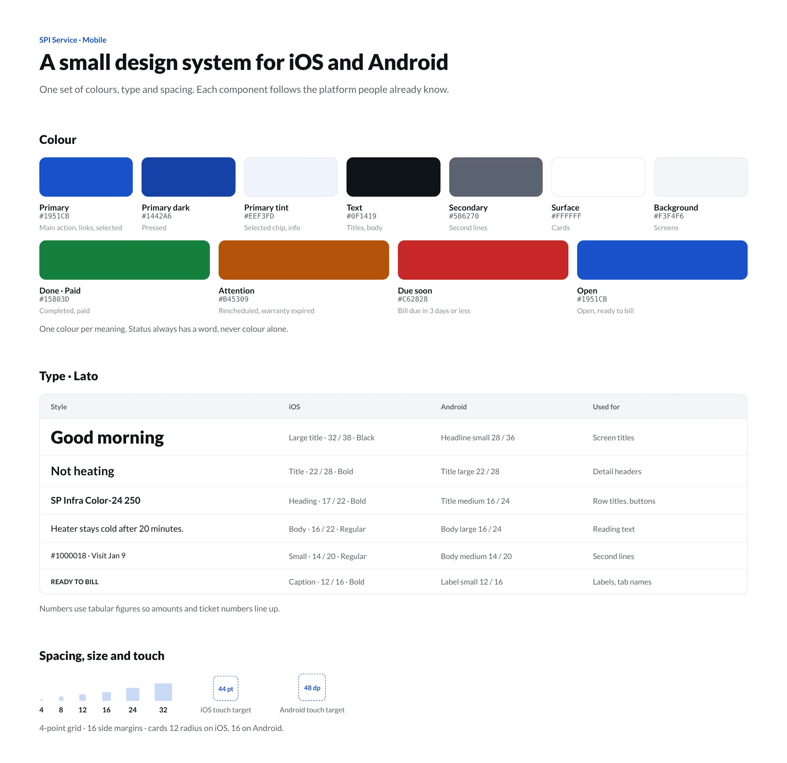
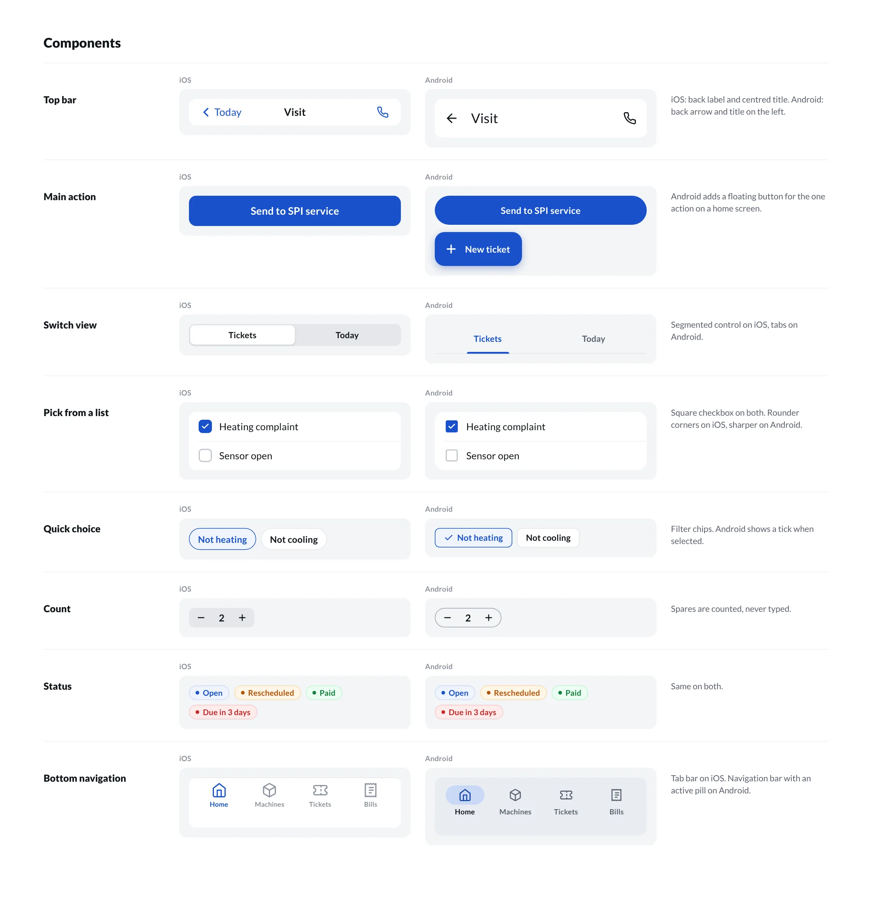
Value
What it should change, and how we’ll know
The app is being built now, so there are no results yet. These are the changes it’s designed for, and what we’ll measure.
“Before the app, we had to check calls and messages to track a job. Now, everyone can follow it in one place.”
Rakesh, Owner, SPI Equipments, after a walkthrough of the prototype
How we’ll know it works
- Calls per ticket
- Today 3–5. Tracking in the app should bring this near zero.
- Bills sent same day
- Today 3–5 days. Priced jobs should leave accounts the day the job ends.
- Reports started by QR
- Shows if customers trust the scan over calling.
- Days to payment
- Today about 30. Clear bills with a due date should be paid faster.
Designed, not built yet
Next: payments and a management view
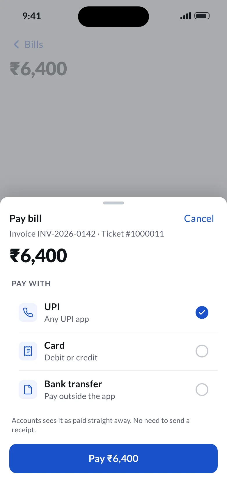
Pay in the app
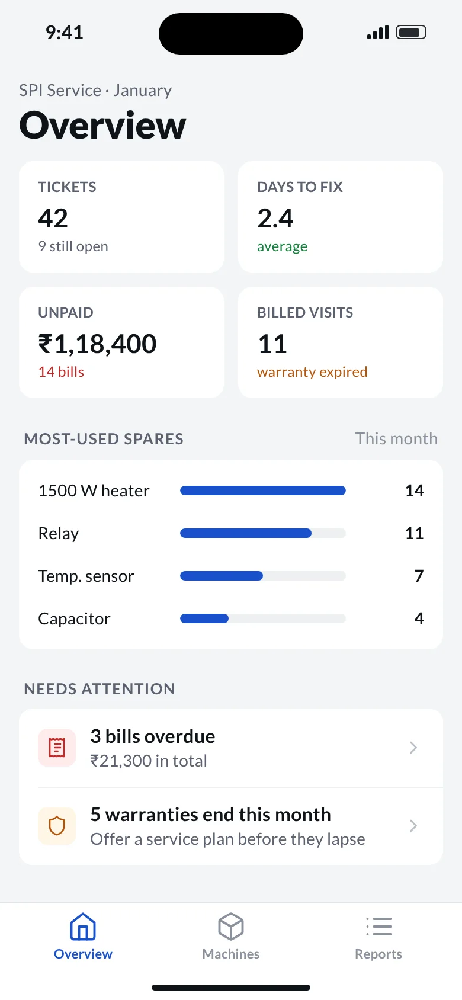
Management overview
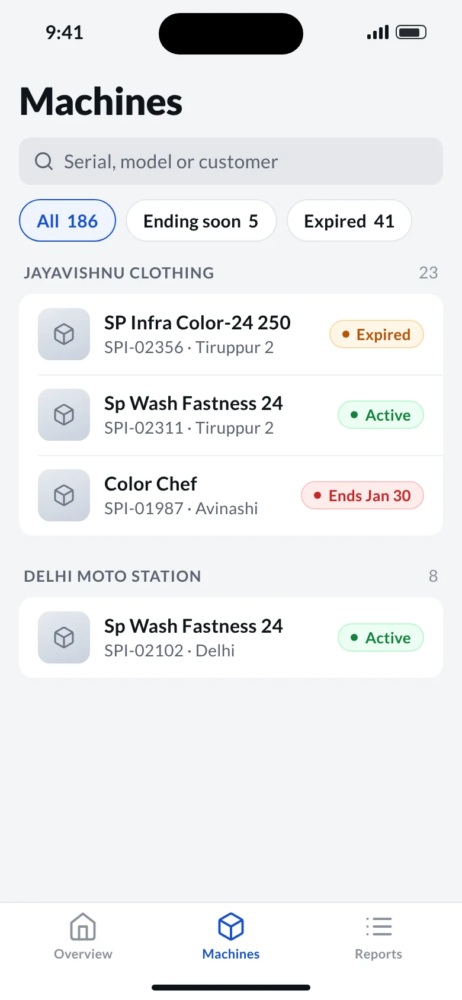
Machine register
Looking back
What I’d test next
The biggest open question is diagnosis at the machine, on a phone. Here’s how I’d answer it before rollout.
- Who
- 5 SPI engineers, on real visits, at the machine, using their own phones.
- Tasks
- Open today’s first visit and start it, record what’s wrong, count the spares and finish.
- It works if
- All 5 finish without help, spare counts match what was used, and customers trust the warranty status.
- Left for later
- Online payment, management reporting and the chart view on the dashboards.
- Where it is now
- Being built for iOS and Android. Customer, engineer and accounts flows are designed end to end.
Let’s talk
I usually reply within 24 hours · It’s --:-- in Coimbatore